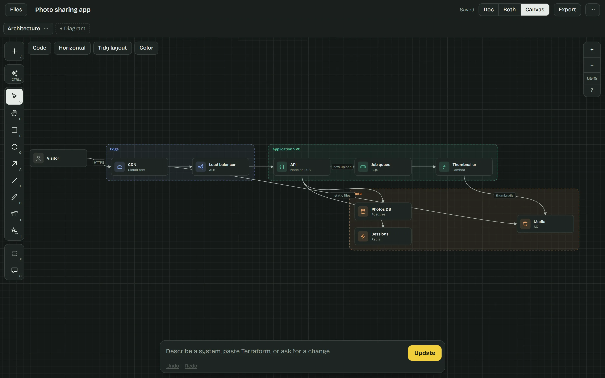

フロントエンド×10
Frontend
React.js · Next.js · Redux · and 7 more
tap to flip ↻Frontend10 moves
- React.js
- Next.js
- Redux
- Zustand
- React Query
- Tailwind CSS
- Material UI
- Vite
- Webpack
- PWA
シュバム・ラージ
フルスタックエンジニアFull Stack Software Engineer · MERN
Nearly three years in production. He builds the parts of a product that have to keep running: a DAG-based workflow automation engine, an LLM chatbot backend, an offline-first POS and real-time Socket.io apps.
Yo! I'm Shubham. Want to see what I build?
Currently: building an n8n-style workflow automation engine at NIIT. Workflows are graphs of pluggable nodes, a Redis-backed queue runs them off the request path, and every run records each node's input, output, status and duration.
Previously: a Jira ticket tracker with automated overdue alerts, and a React point-of-sale app that keeps billing with no network.
I own features end to end, write the HLD/LLD docs, review code and mentor junior engineers. Before all this, I studied electrical engineering.
Class X (AISSE)
Sunshine Prep/High School, MuzaffarpurClass XII (AISSCE)
Trident Public School, MuzaffarpurB.Tech, Electrical Engineering
Dr. B.C. Roy Engineering College, DurgapurFirst production deploy
Webmintra Technologies, NoidaReact.js · Next.js · Redux · and 7 more
tap to flip ↻Node.js · Express.js · BullMQ · and 6 more
tap to flip ↻MongoDB · PostgreSQL · Redis · and 4 more
tap to flip ↻Docker · AWS · GitHub Actions · and 5 more
tap to flip ↻JavaScript · TypeScript · Python · and 5 more
tap to flip ↻Jest · Supertest · Swagger · and 6 more
tap to flip ↻OpenAI API · Gemini API · RAG · and 1 more
tap to flip ↻System Design · SOLID · TDD · and 6 more
tap to flip ↻Web Developer
完COMPLETEOur hero joins Webmintra and builds the Shipment, Ledger and Reports modules of a React.js POS, with Redux Toolkit and reusable custom hooks for data fetching, pagination and form state.
Then come throttled infinite scroll and a password-reset API with expiring tokens.
Network down? Billing keeps going. I made the POS offline-first with IndexedDB storage that syncs on reconnect!
A PWA service worker caches the app shell for instant loads and auto-updates on new builds.
REST APIs for payments, maps and OAuth 2.0 social login get wired into responsive HTML/CSS/JS UIs.
Figma designs become features, built with designers, QA and product owners through Git branches and PR reviews.
Associate Software Engineer
完COMPLETEAt NIIT he builds a Jira ticket tracker in React, Node.js/Express and MySQL, syncing issues from the Jira REST API via JQL into Sequelize ORM models with associations and migrations.
Server-side pagination, MySQL indexing, lazy loading and memoization keep it fast.
No more manual tracking! A node-cron job flags overdue tickets on a filterable React dashboard.
EdTech UI defects fall to Flexbox/Grid and media queries, for responsive, WCAG-compliant layouts.
Agile/Scrum sprints with Jira, Confluence and SVN, Jest/RTL unit tests, code reviews and production root-cause analysis.
Software Engineer
放送中NOW AIRINGHe architects an n8n-inspired workflow automation engine in Node.js/Express. Workflows are DAGs of pluggable nodes (triggers, HTTP calls, conditions, transforms) built with Strategy and Factory patterns.
The orchestration core handles cycle detection, topological-sort run order, conditional branching and per-run execution state: node input, output, status and duration.
Execution runs on a Redis-backed BullMQ queue with worker processes, so workflows never block a request and scale horizontally!
Third-party calls get timeouts, exponential-backoff retries on 429/5xx and centralized error-handling middleware.
Versioned REST APIs cover the workflow lifecycle (create, validate, execute, monitor, activate) with schema validation, rate limiting, RBAC and Swagger/OpenAPI docs.
An AI chatbot backend arrives with per-session memory, system/user prompt templates, LLM API calls, context-window trimming and response post-processing.
Jest/Supertest tests, structured logging and Dockerized CI/CD. He writes the HLD/LLD docs, leads code reviews and mentors junior engineers.
Small browser simulations of systems from the story. They run entirely on this page; the production code belongs to his employers.
A seven-node workflow. Execute it to watch Kahn's algorithm pick the run order and the IF node choose a branch. Make the inventory API fail to take the false branch, or add a retry loop and watch the validator reject the cycle.
| Node | Status | ms | Output |
|---|
Third-party APIs fail. Each retry waits twice as long as the last, with jitter so clients don't retry in lockstep, and a 429 respects its Retry-After header. Turn up the failure rate and send a request.
// retry policy for outbound HTTP nodes retry({ on: [429, 500, 502, 503, 'ETIMEDOUT'], retries: 4, base: 200, // ms factor: 2, // 200, 400, 800… jitter: 0.2, // ±20% timeout: 1000, // per attempt respectRetryAfter: true }) // still failing → error middleware → 502
Ring up a bill, then switch the network off. Bills keep saving on the device and sync in order when you reconnect. It's the same approach the Webmintra POS uses so billing works without a network.
Chat history grows until it no longer fits the model's context window. This assistant has a 240-token budget: the system prompt stays pinned and the oldest turns are dropped first. Replies are scripted from the resume, so no model is called.
Design docs and diagrams, side by side
公開中LIVE
A React app for technical design docs: write markdown on one side, draw architecture, flowchart, sequence and schema diagrams on the other. Diagrams are written as code and rendered to SVG by hand-built layout engines.
Describe a system in plain words and AI drafts the doc and diagram, through a Netlify Edge Function that keeps the API key off the browser.
次回「シュバム、チームに加入！？」
Building something with Node.js, React or a queue that has to stay up? He'd like to hear about it. The next episode is up to you.